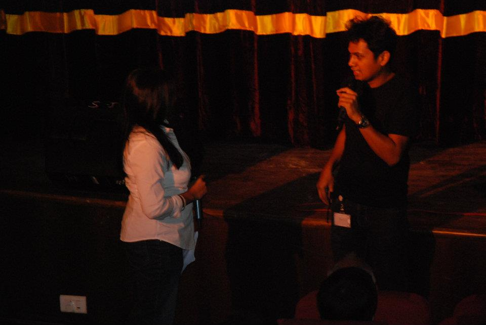
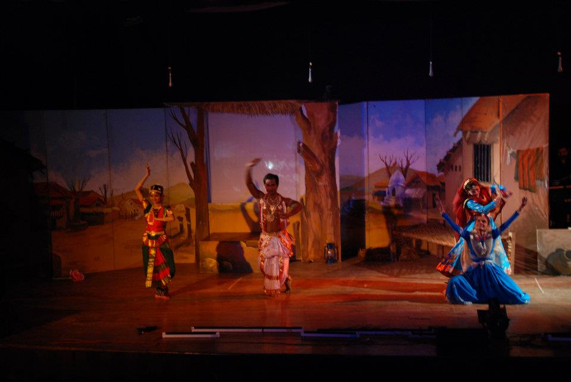

January 2012
Shodh — A Farmer at the Edge
Wrote and directed Shodh — a search for hope set against the farmer-suicide crisis. The first half dwells in silence: a man, his wife, and the slow weight of a failing field. The play asked a quiet, urgent question — when the world stops giving back, where does inner strength actually come from? The drama earns its name by refusing easy answers.

